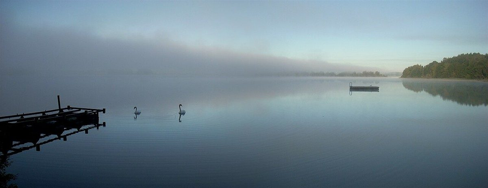

店のこと
店のこと
お店について確認できているのは、所在地とInstagramのアカウントだけです。
このページの「想像してみる」部分は、制作側が想像して書いたものです。お店の実際の様子・考え・メニューとは関係がありません。
確認できていること
- 店名は「cafe Norn」、業種はカフェ
- 所在地は広島県尾道市土堂１丁目１４−４(〒722-0035)
- 電話番号はなし。連絡はInstagramから
- 営業時間・定休日・メニュー・価格・ご予約・駐車場は準備中

想像してみる
「Norn」という名前から
由来は分かりません。制作側は、飾らない石の質感のように、ざらりと静かな雰囲気のお店かもしれない、と想像しました。たとえば霧の朝の散歩の途中で見つけた小さな石の塔のように、ふと目に留まるお店。そんなことを思い浮かべています(実際のお店の姿ではありません)。
